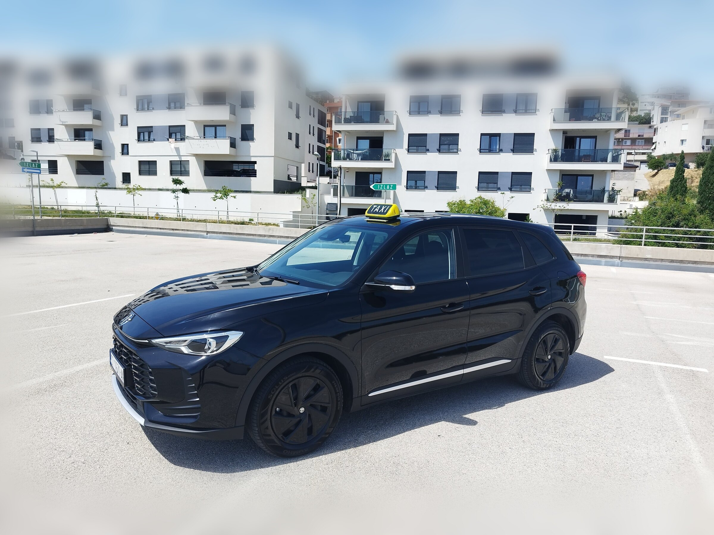
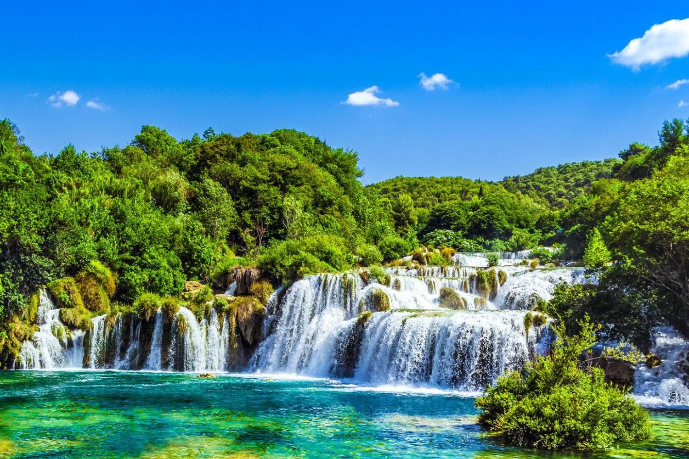
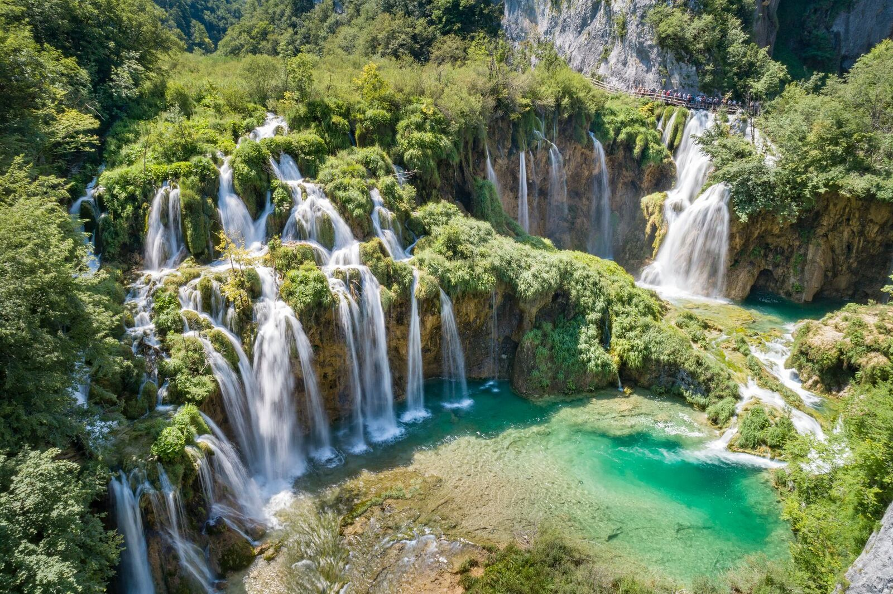
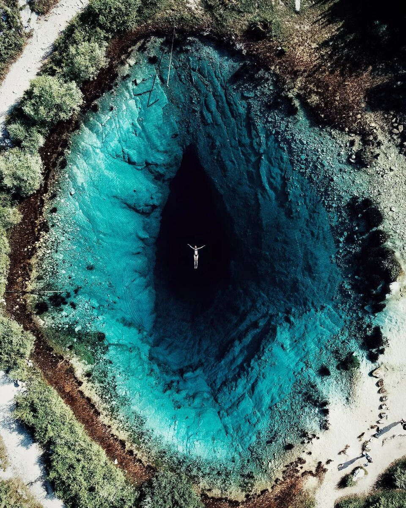
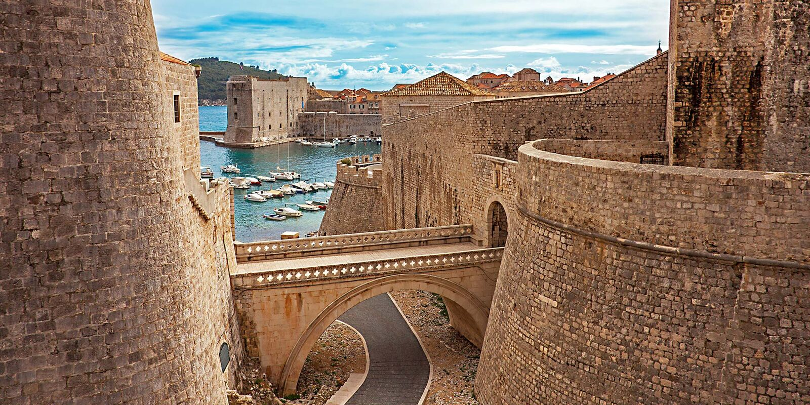
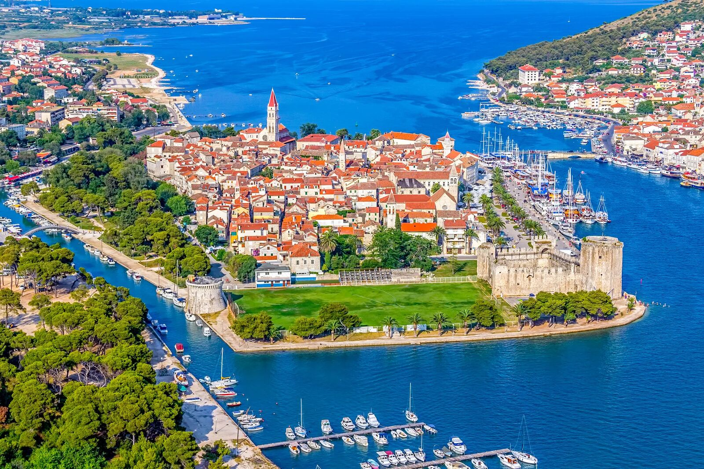
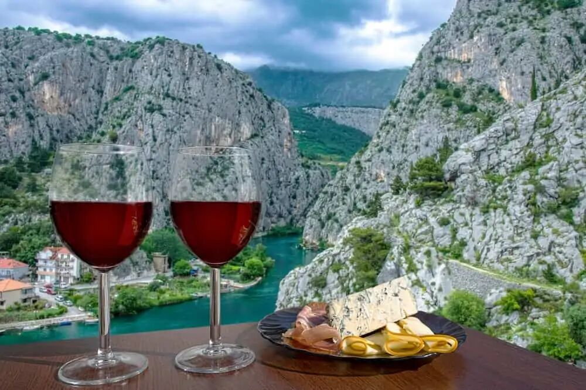

Reliable taxi, airport transfers and tailor-made day trips across the Dalmatian coast — at a fair price, with a Split local at the wheel.
From a quick airport pick-up to a full-day private tour — one number for everything on four wheels.
Quick, fair-priced rides anywhere in Split — day or night.
Split airport · €50 fixed · door-to-door, day or night.
Krka, Plitvice, Izvor Cetine, Dubrovnik — guided drives to all the classics.
Wineries, hidden coves, family routes — built around what you want to see.
Door-to-door from Split Airport (SPU) to anywhere in the city — one fixed price, day or night.
Max 4 passengers per car. Bigger group? Get in touch — larger vehicles available on request.
Door-to-door in a comfortable car — pick a classic below or build your own.

Most popularA short drive inland to one of Croatia's most spectacular national parks — boardwalks, swimming spots and travertine waterfalls.

Full daySixteen turquoise lakes connected by waterfalls — Croatia's UNESCO crown jewel. Best as a full-day trip with an early start.

Hidden gemThe mystical "Eye of the Earth" — a deep turquoise spring forming the source of the Cetina river, with a tiny medieval church perched above. A short, scenic drive inland.

IconicThe Pearl of the Adriatic — walled old town, Game of Thrones locations and a coastal drive through southern Dalmatia.

Half dayA UNESCO island town and the cliffside fortress that played Meereen in Game of Thrones — paired into one easy half-day loop.

TailoredA custom day in Dalmatia — small family wineries, olive farms, beaches you won't find on the map. Built around what you like.
Don't see your trip here? Tell me where you'd like to go — I'll plan it.
A Split local · electrical engineer · family man · passionate footballer
Krešimir — Krešo to most — was born in Vrlika, right beside the source of the Cetina river (the very Izvor Cetine you'll see in the excursions above). He's called Split home for nearly twenty years, with nearly a decade as a private driver and in passenger services across Dalmatia — airport runs, day tours, late-night rides home, booked, on time, no fuss.
By training he's an electrical engineer — the methodical, careful kind, which is exactly what you want behind the wheel. At home he's a dedicated family man. On the weekends, a passionate football and futsal player and a lifelong fan of the game.
What you'll notice on the ride: warm, easy company, fluent English, and a real eagerness to help. Luggage hand at the airport, a restaurant tip inside the Palace walls, advice on which beach is sheltered from today's wind, the right ferry to catch for Hvar — just ask.
Tell me where and when — I'll handle the rest.